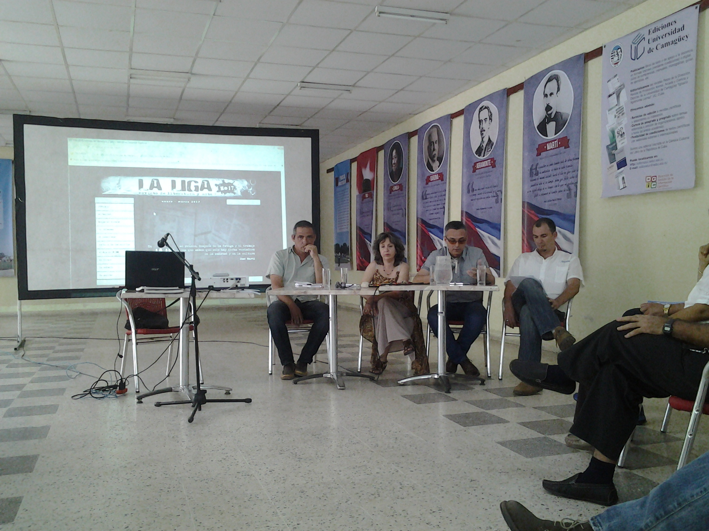
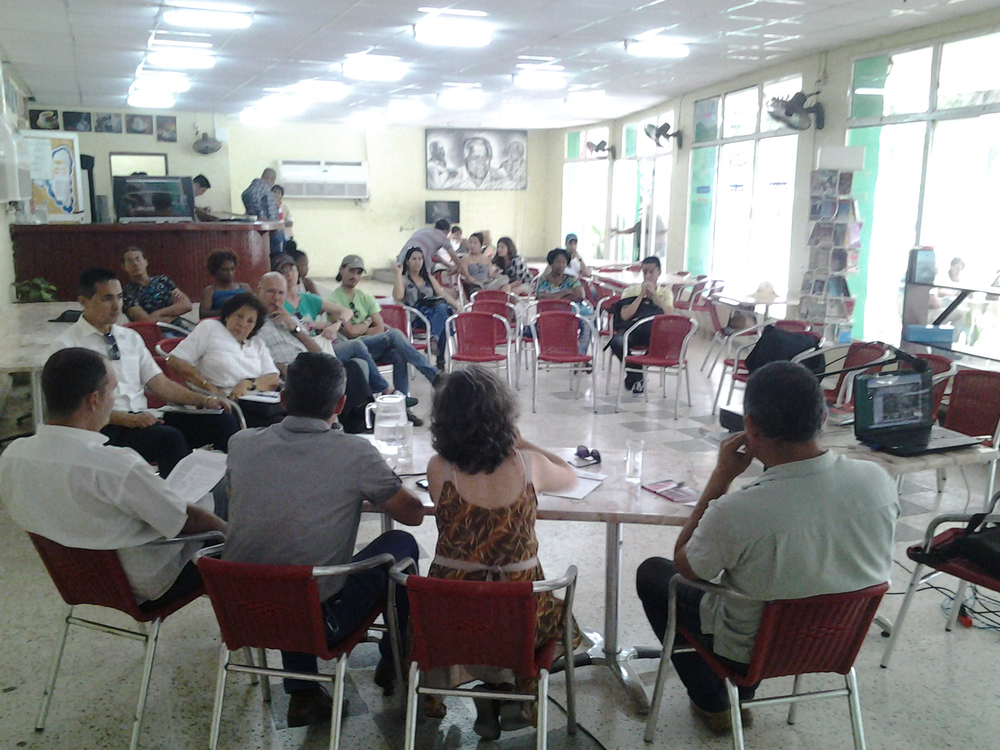

María Antonia Borroto: Este es un Día de La Liga muy especial, pues vamos a debatir un tema que nos preocupa y que, sin embargo, no suele asociarse con la agenda de las instituciones culturales. Le hemos denominado “Cuentapropismo y cultura” para recalcar no solo el hecho de que ni Yoan ni yo somos economistas, sino porque nos parece que el tema debe ser discutido más allá de sus implicaciones económicas. Tampoco queremos verlo circunscrito a las dinámicas que puedan generarse en el Ministerio de Cultura con el afianzamiento del llamado trabajo por cuenta propia.
Mi papá siempre fue cuentapropista. Esto es algo que yo no hubiera confesado unos años atrás. El propio Malcom, a quien conozco desde la adolescencia, probablemente no lo supo en ese entonces. A mí papá, que se sintió discriminado y ya tiene 90 años, le llama la atención este viraje al respecto en Cuba y al mismo tiempo dice no tener mucho que ver con la manera en que algunos cuentapropistas se ven a sí mismos. En su lógica un trabajador por cuenta propia debe brindar un servicio determinado y, obviamente, cobrar por ello. Pero de allí a pensar primero en el dinero y casi nunca en el cliente, a ver precisamente en el cliente muchas veces a un enemigo, a alguien a quien sacar dinero a toda costa, hay una gran distancia. Esa es una de las realidades del trabajo por cuenta propia hoy en día, mas, obviamente, no la única. Para analizar el asunto en algunas de sus múltiples aristas La Liga ha invitado a Malcom Calvo Llorella —miembro de la Asociación Cubana de Comunicadores Sociales—, y a Ernesto Antonio Figueredo, ambos con amplia experiencia en la asesoría a trabajadores por cuenta propia.

Malcom Calvo Llorella: Cuando se habla de actividad económica no estamos hablando simplemente de economía, de producción de bienes materiales, de dinero; estamos hablando también de cómo se conforma un imaginario, una manera de entendernos como personas, de entendernos como país. Alrededor de esto me parece interesante una idea de un sicólogo organizacional llamado Edgar Schein, a propósito de la cultura —y aquí pido, por favor, que obviemos la idea de que cultura tiene que ver solo con la poesía, la música, el ballet…, pues estamos hablando de mucho más—, la idea de este autor es que la cultura es un conjunto de creencias, presunciones básicas que condicionan en un grupo social determinado las maneras de sentir, pensar y actuar, y que van determinando el modo en que producen y evalúan las situaciones en que deben moverse y cómo resuelven los problemas de adaptación e integración como grupo, en un espacio geográfico y cultural determinado.
Comento esto porque alrededor del trabajo por cuenta propia —o las nuevas formas de gestión no estatal, no tan nuevas, porque las cooperativas existen desde hace tiempo—, se han tejido una serie de mitos. Son creencias muy simpáticas, como que para que algo funcione tiene que ser privado, o sea, suponer que por el solo hecho de ser privado algo debe funcionar bien. Algunos creen que a una persona con dinero que comience un negocio debe irle bien. Por no hablar de otro mito muy extendido: que todo el que tiene un negocio automáticamente tiene dinero, o sea, se vuelve alguien que está por encima de cualquier realidad.
Muchas personas valoran a los cuentapropistas de esta manera, sin preguntarse cuántas horas dedican al trabajo, cuántos sacrificios hacen desde el punto de vista personal. Hay muchos prejuicios en la manera en que institucionalmente y en el discurso público se habla de la actividad: en un momento determinado se le llama formas de gestión no estatal para entonces sugerir que hay ilegalidad, que hay actividad subterránea y por otra parte se utilizan expresiones como: «qué bien lo que están haciendo», «van a renovar ciertas y determinadas cosas», «van a ser un elemento dinamizador de la economía cubana»; en fin, son muy contrastantes las maneras de entender esto.
Me parece importante reforzar una idea y es que no basta con tener dinero para empezar un negocio. Estuve mirando en unas estadísticas que en el 2011, cuando se hizo la gran apertura al trabajo por cuenta propia y se dio la visión de que era la solución al problema laboral que se generaba en Cuba a partir de la necesaria reducción de plantilla, hubo un crecimiento que llegó a cerca de quinientos mil trabajadores por cuenta propia, pero al mismo tiempo hubo una gran entrega de licencias, alrededor de doscientas mil personas dejaron de ejercer el trabajo por cuenta propia, los argumentos: «esto no es como yo pensaba», «esto no da», «los impuestos son demasiados»… Cuando se profundizaba un poquito más comenzaban a aparecer cuestiones como: «yo no estaba preparado para esto», «esto es más difícil de lo que yo me imaginaba», «había cosas que yo no sabía», «yo no sabía calcular los impuestos, ni administrar el dinero».
Por eso hay un elemento que me parece importante, relacionado con las condiciones para la formación y capacitación. Creo que lo implementado por el sistema institucional del Estado y por otras instituciones ha sido poco efectivo. Hay experiencias de la Asociación de Economistas y Contadores; la Asociación de Comunicadores Sociales ha dado también algunos temas, hay iniciativas de la iglesia que han apoyado la formación, pero todavía falta. ¿Por qué? Porque la formación para ser emprendedor no es la formación que tenemos en las universidades: en el sistema institucional de educación nos formamos como técnicos, pero los conocimientos de cómo enfrentar una actividad económica siendo responsables, porque el dueño de negocio no es el que tiene derecho a usar el dinero del negocio, es el único responsable de que el negocio genere dividendos, a partir de lo que hace. Por tanto hay cuestiones desde el punto de vista de formación en cuanto a temas de preparación, vamos a decir sicológica, que vayan desarrollando una actitud emprendedora.
Esta dichosa palabra está secuestrada; alguien —no se trataba de Obama— en un momento determinado, cuando se hizo la proclama del restablecimiento de relaciones diplomáticas, habló de los emprendedores; Obama, cuando estuvo acá, habló de los emprendedores, y ya la palabra se ha convertido en una palabra maldita. No es una palabra que se utilice solamente en los Estados Unidos, se utiliza en todo el mundo para hablar de las personas que comienzan una actividad económica de forma autónoma. En nuestro contexto la palabra está secuestrada y no se puede utilizar, pero sí es necesaria una preparación de las personas que quieren comenzar una actividad por cuenta propia, para que reconozcan que tienen que tener una actitud de emprendedores, y cuando hablamos de una actitud de emprendedores estamos hablando de que aunque vaya mal hay que levantarse y seguir, y no ver las dificultades como problemas, sino como retos a vencer. Ser un emprendedor incluye también el reconocimiento de las propias limitaciones y de las propias ventajas, y de las condiciones para llevar adelante el negocio. Otro elemento importante en el que hay que preparase para comenzar un negocio es el dominio del marco legal en el que usted va a actuar, pues hay muchas personas que han pasado por situaciones desagradables, se han visto a merced de órganos sancionadores por desconocimiento. Hay un principio legal que dice que el desconocimiento no exonera de la responsabilidad, entonces ¡qué triste es ver a personas que comienzan una actividad económica sin saber lo que está regulado por ley, qué pueden y qué no pueden hacer!
Hay otras cuestiones relacionadas con el desconocimiento de temas de administración empresarial. Hay saberes de marketing, de organización de empresas que no pueden ser ignorados. En mi opinión no tiene sentido, pleno siglo XXI, descubrir el agua tibia y mucho menos dedicar tu dinero, tu esfuerzo y tu tranquilidad familiar a descubrir lo que ya está descubierto en materia de cómo administrar un negocio, por eso insisto en la necesidad de dominar cuestiones financieras. Hoy por ejemplo está pasando una cosa muy graciosa con los bancos: los bancos están saliendo a tocarles las puertas a los cuentapropistas para que utilicen sus servicios, incluida la posibilidad de crédito, sin embargo hay muchas personas que mantienen su mentalidad de que no es bueno utilizarlo, pero parten de una creencia, y no de una evaluación económica que permita utilizar esas ventajas. Conozco casos de personas que están utilizando el dinero del banco para operar en su negocio y el propio les sirve de resguardo para el préstamo que pidieron. Eso por no hablar de los problemas de impuestos: hay quienes tienen negocios montados y no saben cuánto, por norma jurídica, tendrían que pagar. Entre colegas hemos hablado de una idea: para contar la parte de la verdad que a usted le conviene en materia de impuesto, o decir la verdad, lo primero que no puede pasar es que usted esté engañado. Usted tiene que saber cuánto tiene que pagar su negocio porque existen órganos controladores que luego, con unas facultades legales tremendas, vienen y le muestran ciertas y determinadas cosas y punto: a pagar, y lo ponen frente a tremendo problema. Y por último, aunque sé que no se pueden hacer escuelas de ética, sí creo que es importante introducir el término, pues la formación de todo el que quiera comenzar un negocio pasa por hacer un reconocimiento de sobre qué valores se va a montar ese negocio, valores que partan de una vocación de servicio.
Hay una idea que es cierta desde el punto de vista práctico, y muy útil desde el punto de vista moral: la ética produce dinero porque —y aquí les trasmito esas ideas que están ya descubiertas y consolidadas en la práctica—, para que un negocio funcione debe darles a las personas conveniencia, o sea, tiene que dar cosas que les sirvan a los que compran, pero sobre todas las cosas tiene que darles confianza, y la confianza se basa en que usted reconozca que la otra parte no lo está engañando, no está mintiendo.
Esas son cosas que hacen falta porque en mi opinión no estamos armando maneras de resolver cuestiones de dónde arreglo mis zapatos, de dónde me como la pizza, dónde duermo, estamos hablando de qué tipo de país vamos a ir construyendo.
María Antonia Borroto: Estoy realmente muy de acuerdo con estas últimas ideas, ellas son la explicación misma de porqué el tema le preocupa tanto a La Liga , de por qué queremos incluirlo en ese libro que estamos soñando. Sin duda alguna, has dado en el clavo, el asunto es el país mismo que estamos construyendo. Si analizamos los propios temas que hemos tenido en la mesa todos confluyen, y la preocupación última de estos paneles es la Cuba que queremos no ya para nosotros únicamente sino también para nuestros hijos. Me ha encantado también tu manera de referirte a la actitud emprendedora, porque está claro que es una actitud frente al hecho mismo del negocio, pero debe ser una actitud también frente a la vida, al margen incluso de sistemas políticos determinados o de formaciones socioeconómicas —para referirnos con propiedad al fenómeno—. Yo —perdonen que introduzca otra anécdota personal—, tengo dos primas nacidas y criadas en un contexto capitalista: una ha decidido ser siempre una empleada y la otra ha montado sus propios negocios, pues poseen formaciones sicológicas completamente diferentes.
A mí hay algo que me ha llamado mucho la atención en la manera en que se han gestado estas nuevas formas de organización económica y es lo poco que se ha exigido en el nivel de preparación a los llamados cuentapropistas, de preparación en el dominio incluso de la actividad que van a ejercer, no ya de esta otra preparación que tendría que ver con asuntos económicos, con asuntos de otra índole, de corte legal y demás. ¿Hasta qué punto es válido incluso para la seguridad ciudadana, para la seguridad de las personas que van a recibir el servicio que cualquiera simplemente decida tener una peluquería sin que exista la confianza en el dominio mismo del oficio que esa persona tiene? Conozco personas que han vivido experiencias terribles, y pienso en algo como el tema de la inocuidad de los alimentos. Tengo que confesar que me asustó muchísimo cuando oí recientemente que el Consejo de Ministros se pronunció por la inocuidad de los alimentos, me parece magnífico que lo hiciera, pero al mismo tiempo pienso en qué pudo haber estado sucediendo al respecto hasta este minuto. Cuando uno elige qué llevar a la boca —desde el punto de vista de la alimentación por supuesto—, está eligiendo también una forma de vida, protegiendo su salud, en fin. A veces pienso que estamos muy desamparados en tanto clientes frente a este mundo que se está gestando.
Tengo otra preocupación, desde un punto de vista digamos que contractual. Hablaba con Malcom antes de sentarnos aquí de ciertos vacíos legales, de normas jurídicas que no están atemperadas, de esa presunción de culpabilidad que a veces impera en nuestro contexto —donde la inocencia es lo que debe ser probado— y la precarización misma que muchas veces suelen tener las condiciones de la persona empleada por el gestor de un negocio. Yo recibo un servicio latinoamericano de publicaciones preocupado por la temática del género. Y muy a menudo publican las problemáticas asociadas al cumplimiento o no de las políticas que estipulan la protección del trabajador en caso de maternidad o enfermedad, con la higiene del trabajo —si, por ejemplo, se exige estar demasiado tiempo de pie en unas condiciones que no son siempre las más idóneas—, hasta qué punto se cambia salud por dinero, en fin, ese tipo de debates que también son necesarios en la sociedad cubana actual. Hace poquito tiempo pude asistir a un evento en Casa de las Américas donde se presentó una tesis de doctorado fabulosa sobre las domésticas en Cuba, fenómeno que ahora tiene diferentes nombres: «la muchacha que me ayuda», por ejemplo, uno de los eufemismos más frecuentes para esconder de lo que realmentese trata. Ese estudio corroboraba la existencia de un fuerte proceso de precarización, se refería como ya dije a la empleada, pero yo lo siento también en la persona que está contratando al otro, pues no hacerlo con un marco legal definido que reconozca deberes y derechos del empleador y del empleado, ambos pueden estar sujetos a muchos fenómenos y no tener luego un marco de actuación que permita solucionar satisfactoriamente para las partes las situaciones que se puedan presentar. Imagino que en esta búsqueda del consenso y en este proceso de transformación en el que nos encontramos irán organizándose muchas de estas cosas.

Ernesto Antonio Figueredo: Emprender un negocio tiene varias dimensiones. Se supone que si yo quiero hacer una cafetería tenga que saber hacer un café, preparar una tortilla, freír una croqueta y otras muchas cosas. Pero, usted puede saber hacer todo eso y no estar capacitado para abrir una cafetería, como también puede saber hacer la mejor pizza del mundo, pero eso no significa que usted pueda montar una pizzería, son dos cosas diferentes. La otra dimensión entonces sería la dimensión propia de la administración de negocios. Considero que «cuentapropismo» es a veces una palabra un poco peyorativa. Es una realidad nueva y es una realidad nueva no solo por los años que lleva aprobada, sino porque obviamente —y creo que en eso coincidimos muchos en Cuba—, no queremos que sean los negocios privados como lo eran antes del 59.
¿Qué es un cuentapropista? Un cuentapropista es el zapatero remendón que está en la esquina poniéndole la suela a los zapatos, pero un cuentapropista es también la persona que tiene uno o dos restaurantes a veces con sesenta trabajadores, ¿realmente podemos meter en el mismo saco al zapatero remendón o al del frozen, y a una persona con sesenta trabajadores y varios negocios? Y aquí estoy hablando de negocios en un sentido muy amplio, puede ser una brigada de construcción, las hay con más de doscientos trabajadores y puede ser una finca en el campo, que también es un negocio y puede tener muchísimos trabajadores. La buena noticia es que estas dos dimensiones de las que hablaba son aprendibles, todos podemos aprender a hacer pizzas y todos podemos aprender a administrar una pizzería; lo que es más difícil de aprender, porque es un problema de aptitud, es el espíritu de emprendedor. En eso tenemos una gran ventaja los cubanos, no nos vamos a llamar emprendedores quizás por la razón que mencionaba Malcom: los cubanos somos luchadores, nos gusta echar para adelante, buscar soluciones de una manera muy creativa. Si tenemos como base este espíritu, hasta personas que tuvieron hasta cuarenta años trabajando para el Estado pueden tener después un negocio y pueden tener un negocio exitoso.
Tenemos varios niveles aquí, pues decimos que los negocios van del chinchal al timbiriche, del timbiriche al negocio y del negocio a la empresa, esta última tiene un carácter jurídico. Empresas privadas en Cuba —privadas por llamarlas de una manera—, son las cooperativas, tanto agropecuarias como no agropecuarias, porque esa distinción solo la hay en Cuba. Pero obviamente no podemos llamar igual al cuentapropista —el zapatero remendón, el del frozen— y al negocio cuya dinámica demanda una organización más compleja.
En esto de crear empresas hay una gran paradoja para los cubanos: si es una empresa privada tienes que transformarla en cooperativa —que no siempre es la manera más auténtica posible—, o tienes que salir del país, coger una ciudadanía de otro país, montar una empresa allí y venir entonces a invertir con capital extranjero, porque a las personas de otros países, tanto naturales como jurídicas, sí se les permite invertir en Cuba y establecerse como empresa legal. Eso es una paradoja terrible: ¿por qué los cubanos no podemos tener una empresa privada?
Muchas veces cuando hablamos de los problemas que tiene este tipo de economía nos referimos al terrible concepto para mí de generar un mercado mayorista para las formas no estatales, eso es terrible, si el mercado mayorista para las formas estatales es tremendamente ineficiente, ¿cómo pretendemos que se genere otro para las no estatales? En realidad todo el mundo debería tener el mismo mercado, con las mismas condiciones, derechos y deberes. Los insumos se vuelven realmente un problema que obliga a muchas cosas que no son buenas.
Ahorita hablaba María Antonia del Decreto del Consejo de Ministros: hay que lograr la inocuidad de los alimentos. ¿Con qué condiciones las personas van a lograrla? Hay que poner a producir la tierra, otro decreto: ¿con qué crédito, dónde se compra un machete, una lima, un par de botas?, ¿dónde se compra una semilla y esto sí no lo pueden hacer las personas individualmente? Una cosa es el discurso y otra muy distinta generar las condiciones adecuadas para ejercer el trabajo por cuenta propia, crear negocios privados y cooperativas. ¿De dónde saca una brigada de la construcción un saco de cemento para arreglar una obra social, un hospital, por ejemplo? Si lo compra lo tiene que hacer como si fuera una persona natural, y el precio es terrible.
Hay muchos problemas, impuestos, pero fundamentalmente el gran problema de los negocios —y aquí voy a meter también a los estatales— es cultural. ¿Cuántas personas conocemos que han sido administradores de empresas estatales que tienen negocios exitosos? Hay pocas, porque son personas que a la luz pública son empresarios, pero realmente están ejecutando ordenes, ejecutando un plan, por tanto no desarrollan la mayoría de las veces una capacidad creativa.
Otra cosa que hace cultural el problema del cuentapropismo en Cuba es precisamente esta visión, si cerramos los ojos y pensamos en una persona con un negocio privado en Cuba cómo lo podemos dibujar, es una persona seguramente casi con los colmillos afuera, como un vampiro, un tiburón y con un ansia desmedida de ganar dinero a toda costa. ¿Por qué tiene que ser así? Realmente en mi proyecto y en muchísimos otros hay otra vocación.
Si alguien te pregunta cuál es el negocio que puede montar más rápido para sacarle dinero, invirtiendo poco y teniendo una gran rentabilidad que solo dependa de él y sus horarios, y de las condiciones en que quiera trabajar, a lo mejor pudiéramos decir que es la prostitución, no necesitas más nada que tu cuerpo. Hay gente que quiere hacer algo que vaya consigo, en lo que pueda desarrollar sus habilidades, y eso es importante, poner los conocimientos, lo que es uno en función del proyecto de vida, porque un proyecto de negocio se convierte en un proyecto de vida. Todos pasamos más tiempo a veces con nuestros compañeros de trabajo, sean del sector estatal o no estatal, que con nuestra propia familia. Ese tiene que ser, entonces, un lugar donde nos sintamos bien, donde generemos buenos ambientes de trabajo y que ese ambiente sea seguro, donde la gente pueda desarrollar realmente sus habilidades, sus capacidades, sus talentos, sus dones. Estamos hablando, por tanto, de un fenómeno esencialmente cultural. Por desgracia estas miradas un poco peyorativas hacia el que quiere ejercer una actividad económica privada encuentran justificaciones históricas que nos llevan a la Cuba anterior a 1959, pero ya eso quedó atrás, ahora estamos en el año 2017, hay que mirar al futuro desde una sociedad cubana nueva, donde todos debemos ser importantes como individuos, no como masa, no como grupo de algo y teniendo un negocio podemos ser ese individuo que la sociedad ha disuelto. Eso es importante, genera empoderamiento en las personas, y lo digo con el sentido de la responsabilidad que eso conlleva. Muchas veces vemos a una persona con un negocio y decimos mira ese es el dueño de… Ya es un individuo al menos. Antes cuando era camarero en un hotel cualquiera, a lo mejor nadie sabía quién era. Ahora esa persona tiene que asumir la responsabilidad de ser una persona pública también.
Como se trata de un fenómeno cultural tiene que estar alineado con una mayor iniciativa del Estado. Hay micro, pequeñas y medianas empresas en Cuba, lo decía Raúl en el cierre del congreso del partido, ya las hay, había cuentapropismo y ya hay micro, pequeñas y medianas empresas. ¿Qué hacemos con ellas?, ¿cómo las organizamos?, ¿cómo les damos promoción? Piensen un momento, cuando un negocio va a abrir, cuando alguien está reparando algo para poner un negocio, todo el mundo está un poco pendiente, ¿qué irán a poner allí?, ¿qué irán a vender?, ¿será para el turismo?, ¿podré satisfacer allí alguna de mis necesidades? El negocio ya no es solo un bien individual del dueño o de los dueños, los negocios pasan a ser un recurso colectivo, porque no solamente estás satisfaciendo las necesidades de una persona, sino de una comunidad. Entonces este tipo de responsabilidad debe ir acompañada de un nivel de formación. Se han hecho algunas acciones como dice Malcom, pero son tremendamente insuficientes, algunas que se han hecho fuera del marco estatal no han caído bien.
¿Cómo los negocios en Cuba están teniendo un impacto cultural en la localidad donde están ubicados? Pensemos hace treinta años atrás, si íbamos a permutar la casa, ¿a quién buscábamos? Al corredor o salíamos a caminar, ¿no es verdad? Hoy es más fácil, caballeros, tenemos una agencia inmobiliaria. Los negocios realmente están cambiado la manera en que estamos viviendo y se puede palpar aquí mismo en nuestra comunidad. Si llamas por teléfono te llevan una pizza a la casa, hace treinta años eso no podía pasar. Hay que tener responsabilidad con esas cosas, tener un negocio es una gran responsabilidad, yo digo que es como un hijo, a veces uno pasa más horas pensando en el negocio que en el hijo de uno. ¿Cómo llegar del chinchal al timbiriche, del timbiriche al negocio y del negocio a la empresa?, o mejor, ¿cómo hacer para que cuando nazca ya nazca negocio o nazca empresa?
Malcom Calvo Llorella: Sobre esto que comentaba Ernesto hay mucha tela por donde cortar y me voy a detener en esta cuestión de la responsabilidad, responsabilidad que aparece porque es que cuando surge un negocio es una manera de resolver determinados problemas de determinado grupo, pero es también el modo de vida no solo del dueño o la dueña, sino de las personas que trabajan allí. Esa es una dimensión de la responsabilidad que no debe perderse, y tiene que ver con los marcos legales en los que se mueve la actividad por cuenta propia.
En el 2014 la Asamblea Nacional votó el nuevo Código de Trabajo de la República de Cuba, y fue en el segundo semestre del 2016 cuando las instituciones de trabajo comenzaron a exigir que los cuentapropistas que tiene trabajadores contratados les hicieran los contratos que esa ley había dispuesto desde el 2014. Quiere decir que hay un marco de responsabilidad que en el marco legal se está pidiendo. Pero muchos trabajadores por cuenta propia tienen que ganar en la responsabilidad que adquieren primero con sus empleados, los que muchas veces, advierto, son familia, y no quedan bien delimitados los espacios y eso genera conflictos en el ámbito laboral que con determinado conocimiento se pueden prever. Ese es un ámbito de responsabilidad que creo que es importante, responsabilidad con los que trabajan en el negocio, responsabilidad con los que van a recibir los servicios del negocio.
Hay un cartelito muy simpático por allí que dice: “Horario de trabajo: abrimos cuando llegamos, cerramos cuando nos vamos y si no nos encontramos es que no coincidimos”. Entonces hay una cuestión de responsabilidad, y volvemos a la falta de confianza, la falta de solución que aparece en las actividades de servicio gestionadas por el Estado donde no te atienden, donde no te pueden dar una explicación, donde nadie es responsable de nada, donde tú tienes la obligación de aceptar que te maltraten. Eso se ha reproducido en muchos de los negocios por cuenta propia, por ejemplo, dónde podemos arreglar hoy un teléfono celular; tenemos que llegar a los puestos donde se arreglan teléfonos celular y ponernos la mano en el pecho y decir que la suerte me acompañe o, como en La Guerra de las Galaxias, que la fuerza me acompañe para no partirle la cabeza si me rompe el teléfono. Pero ese es el espacio que hay y así como hay personas que denigran la actividad, las hay que se han ganado su prestigio.
Hay lugares hoy donde las personas llegan y dicen: ¿y esto de verdad es privado, no será estatal? Pues no conciben un lugar en el que haya orden y pongan una etiqueta de sello de garantía después que arreglen una computadora. Creo que eso tiene que ver con lo que hablaba Ernesto sobre la responsabilidad y cómo se van creando espacios para una nueva manera de hacer la economía. Y aquí me voy a la idea de Marx: al modo de producción social, al que normalmente se le quita la parte social y se queda en el modo de producción a secas, pues se piensa que eso tiene que ver simplemente con la cantidad de tuercas. El término original es modo de producción social porque los seres humanos nos hacemos en la medida en que nos relacionamos en la solución de problemas de vida, por tanto, si la manera en que se dan los servicios son maneras irresponsables, estamos fomentando relaciones de desconfianza, estamos fomentando relaciones de antagonismo. Por el contrario, si la manera en que se ofrecen los servicios tiene base de cooperación, de reconocimiento, de responsabilidad, de pensar en el otro, pues estamos fomentando la solidaridad, el comprometimiento, la voluntad de servicio, o sea, no es tan simple como producir pan, pizza o arreglar zapatos, va un poco más allá. Hay un sustrato que pasa por lo ético y está en todo lo que está sucediendo en el ámbito económico.